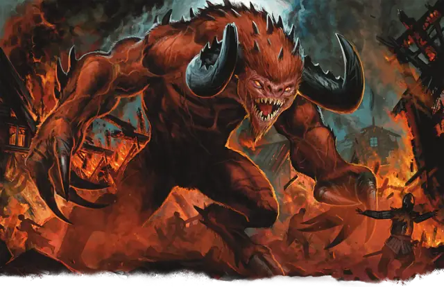

Гористро
Goristro
Огромное Исчадие (Демон), Хаотичное Злое

Класс Защиты 19 Инициатива +6 (16)
Хиты 310 (23к12 + 161)
Скорость 50 футов
| мод | спас | ||
|---|---|---|---|
| СИЛ | 25 | +7 | +13 |
| ЛОВ | 11 | +0 | +6 |
| ТЕЛ | 25 | +7 | +13 |
| мод | спас | ||
|---|---|---|---|
| ИНТ | 6 | −2 | −2 |
| МДР | 13 | +1 | +7 |
| ХАР | 14 | +2 | +2 |
Сопротивление урону Огонь, Холод, Электричество
Иммунитеты Яд; Отравленный
Чувства Тёмное зрение 120 футов, пассивное Восприятие 17
Языки Бездны
Опасность 17 (18 000 опыта; БВ +6)
Особенности
Восстановление демона. Когда гористро умирает за пределами Бездны, его тело превращается в лужу ихора и в тот же миг заново возрождается со всеми Хитами где-то в Бездне.
Сопротивление магии. Гористро совершает с Преимуществом спасброски от заклинаний и прочих магических эффектов.
Осадное чудовище. Гористро наносит двойной урон объектам и постройкам.
Действия
Мультиатака. Гористро совершает одну атаку Свирепыми рогами и две атаки Крушащим ударом.
Свирепые рога. Бросок рукопашной атаки: +13, досягаемость 10 фт. Попадание: 40 (6к10 + 7) Колющего урона. Если цель — существо Огромного размера или меньше, она отталкивается от гористро по прямой на расстояние вплоть до 20 футов и Опрокидывается.
Крушащий удар. Бросок рукопашной атаки: +13, досягаемость 10 фт. Попадание: 29 (4к10 + 7) Дробящего урона.
Бонусные действия
Налёт. Гористро перемещается по прямой к видимому им врагу на расстояние вплоть до половины своей Скорости.
Бонус мастерства +6
Среда обитания Бездна
Сокровища Оружейные
Гористро
Демон катастрофы
Гористро — пугающие своими размерами и силой гигантские демоны, способные разрушать целые города. Эти демоны воплощают в себе бессмысленный, беспощадный бунт и разрушительный нигилизм, а также испытывают особую неприязнь к массивным существам и грандиозным постройкам. Замки, башни, великаны, боевые животные — всё будет сокрушено гневом этих монстров.
Гористро напоминают сгорбленных доисторических минотавров, которые покрыты шрамами, полученными в демонических войнах или от ударов могучих боевых машин. Внешний вид этих бестий повторяет облик их создателя — демонического владыки Бафомета, которому поклоняются злые минотавры. Гористро бродят по царству Бафомета в Бездне — Бесконечному Лабиринту — и перемалывают всех существ, кроме демонов, с которыми сталкиваются в его громадных магических коридорах.